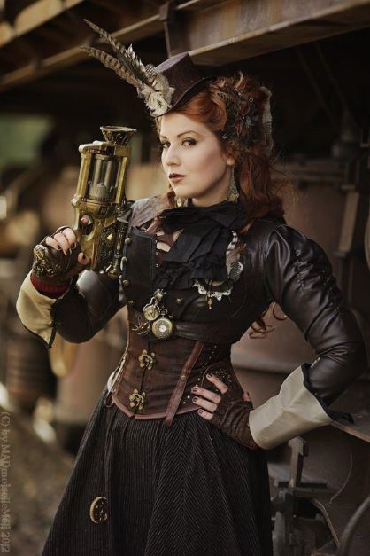
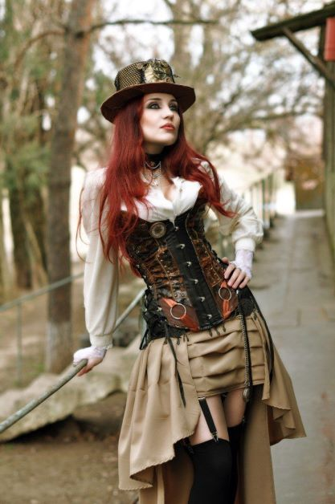
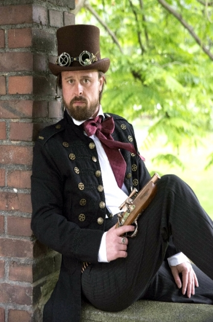

Que es SteamPunk?
Abre la imaginación, cierra los ojos y remóntate a la época victoriana y de la Revolución Industrial en Inglaterra. Observa a la gente que te rodea. Abre los ojos y vuelve a la actualidad. Ahora también los tenemos cerca. Se trata de los Steampunks, una nueva tendencia estética y cultural que se dedica a buscar el tiempo perdido, el que jamás vivimos.
De donde viene?
Nació inspirado en el subgénero literario de fantasía y ciencia ficción en la que se basaban autores como Julio Verne o H.G Wells. Concretamente hablamos de una etapa intelectual vivida en los años 70 británicos donde la ciencia ficción era utilizada como crítica al contexto social y político.En este contexto y llegados los años 80, el auge de la literatura fantástica creció y estaba dominado por el ciberpunk, una visión al futuro hecha desde el pasado. El ciberpunk era utilizado principalmente como vehículo de crítica al presente, a las políticas neoliberales de la época y a la falta de futuros distópicos, es decir, sometidos al transhumanismo con el fin de explorar una tecnología más adaptada a las personas.
Moda
Esta moda es una fusión entre las vestimentas de la etapa victoriana junto con matices futuristas,
de manera que el look de los seguidores de este movimiento sea una antítesis entre lo antiguo y lo moderno.
Para conseguir esta mezcla se pone en práctica el crafting, es decir, la técnica Do it yourself o "hazlo por ti mismo",
de manera que las prendas son modificadas por sus seguidores. En la modificación de las prendas adquieren
un gran protagonismo materiales como el cuero, la madera y el metal. En definitiva, se centra principalmente
en crear un look con una vestimenta extravagante y, sobre todo, unos complementos y artilugios hechos a mano.
Siguiendo esta línea, en el caso de las mujeres destaca el uso de corsé, vestidos con muchas capas y voluminosas faldas,
adornando su cabeza con algún sombrero o tocado. En cuanto a los hombres es habitual el uso de trajes inspirados en
la Inglaterra del siglo XIX, acompañados de bastones o sombreros de copa muy alta, así como todo tipo de complementos
pintorescos, desde gafas de aviador grandes y redondas,
guantes, cinturones o hasta un faisán en el brazo. Todo vale si el resultado final es retrofuturista.
Outfits




.jpg)